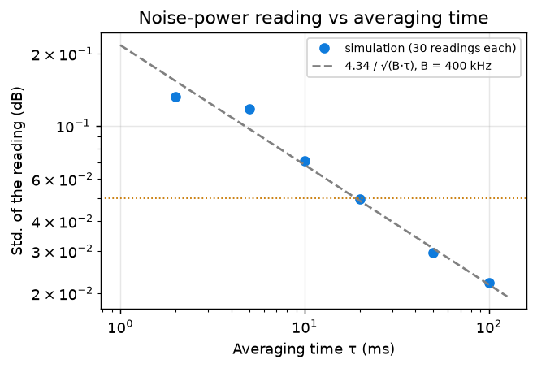
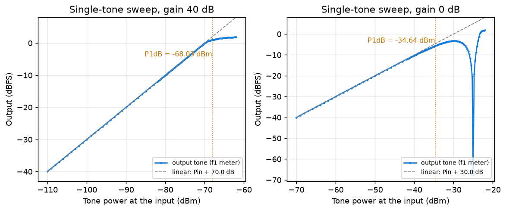
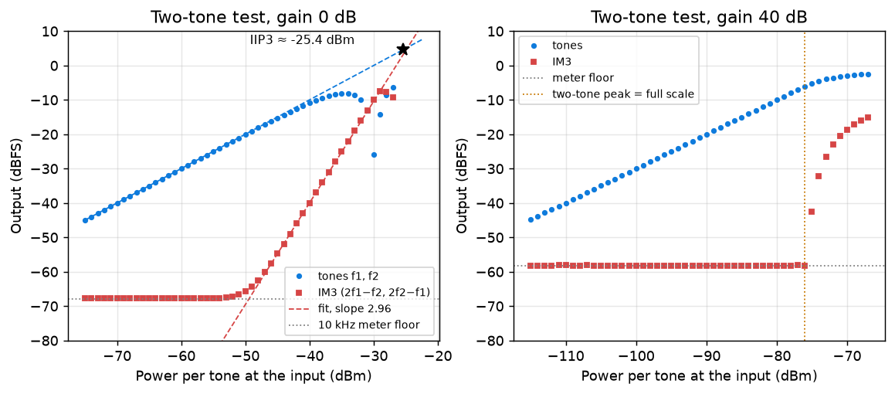
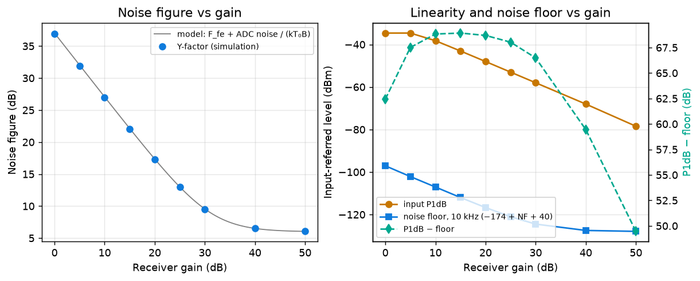
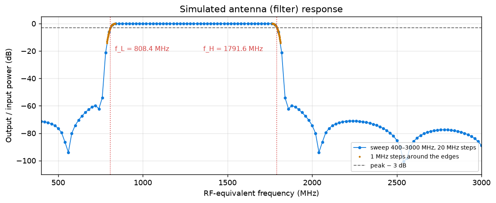

Noise Figure, P1dB and IIP3
One-page summary
What the noise figure measures. Every real stage adds its own noise. The noise factor F = SNRin/SNRout, with the input at the reference temperature T0 = 290 K, tells by how much a stage degrades the signal-to-noise ratio; NF = 10 log10 F. Equivalently, the stage behaves as a noiseless one fed by an extra noise temperature Te = (F − 1)T0. Referred to the input, the noise floor in a bandwidth B is Nfloor = −174 dBm/Hz + NF + 10 log10 B, which sets the weakest signal the receiver can detect. In a cascade (Friis) each stage’s excess noise is divided by the gain in front of it, so the first stage dominates if it has enough gain, a lossy element before the first amplifier adds its loss directly to NF, and in an SDR the noisy ADC at the end matters less the more gain sits in front of it — the noise figure of an SDR therefore depends on its gain setting.
Why the Y-factor method needs no absolute power. A calibrated noise source is switched between “off” (a matched load at T0) and “on” (an effective temperature Th, quoted as ENR = (Th − T0)/T0). Because the receiver’s output noise power is linear in the source temperature, N = G k B (Tsource + Te), the unknown gain G and bandwidth B cancel in the ratio Y = Non/Noff = (Th + Te)/(T0 + Te), and F = ENR/(Y − 1). Only a ratio of two readings in the same (uncalibrated) dBFS scale is needed. The method requires a fixed gain (AGC off), a receiver that stays linear in the “on” state, and an ENR matched to the NF so that Y is neither close to 1 (large error) nor so large that the receiver compresses.
What the third-order intercept predicts. A weakly nonlinear stage y = a1x + a3x³ compresses a single tone (P1dB: the input at which the gain has dropped by 1 dB) and, for two close tones f1, f2, creates intermodulation products at 2f1 − f2 and 2f2 − f1 that fall next to the wanted signals and cannot be filtered out. They rise 3 dB per dB of input while the tones rise 1 dB per dB; the input level where the two extrapolated lines meet is IIP3. From one measurement (Pin, Δ) it gives IIP3 = Pin + Δ/2 and therefore predicts the level of the in-band distortion for any other pair of signals. Combined with the noise floor it gives the spur-free dynamic range, SFDR = ⅔(IIP3 − Nfloor): the largest pair of signals whose IM3 products still stay below the noise. For a memoryless third-order model IIP3 ≈ P1dB + 9.6 dB; when the limiting element is ADC clipping the intermodulation appears abruptly and the intercept loses its meaning, so the slope must always be checked.
Theory questions
2.1 Noise temperature and Friis
Te = (10NF/10 − 1)·290 K:
| NF (dB) | 1 | 3 | 6 | 10 |
|---|---|---|---|---|
| Te (K) | 75.1 | 288.6 | 864.5 | 2610.0 |
Chain LNA (G = 20 dB → 100, NF = 1 dB → F = 1.259), filter (loss 3 dB → G = 0.501, F = 1.995), mixer + ADC (NF = 15 dB → F = 31.62):
F = 1.259 + (1.995 − 1)/100 + (31.62 − 1)/(100 × 0.501) = 1.259 + 0.0100 + 0.611 = 1.880 → NF = 2.74 dB
With the filter before the LNA:
F = 1.995 + (1.259 − 1)/0.501 + (31.62 − 1)/(0.501 × 100) = 1.995 + 0.517 + 0.611 = 3.123 → NF = 4.95 dB
The noise figure gets 2.20 dB worse: the 3 dB loss now adds directly to NF and also halves the gain that divides the noise of all later stages. Filters that must come first (e.g. against strong out-of-band signals) should have as little loss as possible.
2.2 Y-factor relation
With output noise N = GkB(Ts + Te): Y = Non/Noff = (Th + Te)/(Tc + Te) ⇒ Te = (Th − Y Tc)/(Y − 1). With F = 1 + Te/T0 and ENR = (Th − T0)/T0:
F = [ENR − Y (Tc/T0 − 1)] / (Y − 1), which reduces to F = ENR/(Y − 1) for Tc = T0.
If Tc ≠ T0 (room warmer or colder than 290 K) the correction term Y(Tc/T0 − 1) must be kept; ignoring it biases NF, most for low-NF receivers where Y is large. Attenuator A at T0 after the source: the source temperature seen by the receiver is T′ = T/A + T0(1 − 1/A), so T′h − T′c = (Th − T0)/A and ENReff = ENR/A, i.e. ENReff,dB = ENRdB − AdB exactly, while the “off” temperature stays T0.
2.3 Sensitivity to a 0.1 dB error in Y
| Case | True Y | NF error, Y read +0.1 dB | NF error, Y read −0.1 dB |
|---|---|---|---|
| ENR 15 dB, NF 6 dB | 9.51 dB | −0.11 dB | +0.11 dB |
| ENR 15 dB, NF 25 dB | 0.41 dB | −0.99 dB | +1.25 dB |
Since F = ENR/(Y − 1), the error is amplified by Y/(Y − 1): harmless when Y ≫ 1, ten times larger when Y is only 1.1. Rule: choose ENR about 5–10 dB above the expected NF (Y ≈ 5–10 dB), but low enough that the receiver stays linear with the source on.
2.4 Third-order nonlinearity
With x = A cos ω1t + A cos ω2t in y = a1x + a3x³, expanding x³ gives at ω1 (and ω2): (a1 + 9/4·a3A²)·A, and at 2ω1 − ω2, 2ω2 − ω1: 3/4·a3A³. The IM3 amplitude grows as A³, i.e. slope 3 in dB.
At the intercept the extrapolated amplitudes are equal: |a1|AIP3 = ¾|a3|AIP3³ ⇒ AIP3² = 4/3·|a1/a3|. At any small input A the ratio of tone to IM3 is Δ = 20 log(a1A / ¾a3A³) = 20 log(AIP3²/A²) = 2(IIP3 − Pin), hence IIP3 = Pin + Δ/2. For one tone the gain is a1 + ¾a3A²; it is 1 dB down when ¾|a3/a1|A1dB² = 1 − 10−1/20 = 0.109, so AIP3²/A1dB² = (4/3)/(4/3 · 0.109) = 9.17, i.e. IIP3 − P1dB = 9.64 dB ≈ 9.6 dB. Limits: (1) it holds only for a memoryless, purely third-order model — fifth- and higher-order terms, memory effects and hard clipping (an ADC) break it; (2) both quantities are small-signal extrapolations: P1dB is already outside the weakly nonlinear region and IIP3 is never actually reached, so measured values can differ by a few dB.
2.5 SFDR (NF = 8 dB, IIP3 = −10 dBm)
| Bandwidth | Nfloor = −174 + 8 + 10 log B | SFDR = ⅔(IIP3 − Nfloor) |
|---|---|---|
| 200 kHz | −113.0 dBm | 68.7 dB |
| 10 kHz | −126.0 dBm | 77.3 dB |
The noise power grows with the bandwidth (10 log B), while the IM3 products of two tones do not; a narrower measurement band lowers the floor and so widens the spur-free range (by ⅔ of the floor change: 13 dB less floor → 8.7 dB more SFDR).
2.6 Gain in an SDR (8-bit ADC, full scale −30 dBm at 0 dB gain)
Referred to the input, the ADC full scale (and with it P1dB and IIP3 when the ADC is the limit) is −30 dBm − G: with 10 dB more gain it drops by 10 dB, to −40 dBm. The ADC noise referred to the input also drops by 10 dB, so the noise floor improves — but only as long as the ADC noise dominates. Once the input-referred ADC noise is well below the front-end noise (kT0·Ffront-end), F → Ffront-end and more gain lowers the full scale without lowering the floor: the dynamic range shrinks dB for dB. In the course model the ADC noise (dither + rounding) is −43.84 dBFS over 2.048 MHz; referred to the input it equals kT0B at 37.0 dB gain, which is why NF falls from 36.93 dB at 0 dB gain to 6.52 dB at 40 dB and only 6.08 dB at 50 dB (Task 4).
Measurement design (Table 4)
| Quantity | Value | Numerical reason |
|---|---|---|
| ENR for NF ≈ 7 dB | 15 dB | Y = 1 + ENR/F = 8.64 dB: well above 1 and far from compression (task 2.3 rule: ENR ≈ NF + 5–10 dB). |
| ENR for NF ≈ 30 dB | 35–40 dB | With ENR 15 dB, Y would be only 0.14 dB (a 0.1 dB error in Y → several dB in NF); with 35 dB, Y = 6.19 dB. |
| Attenuation after a 15 dB source | NF 7: 0 dB · NF 30: not possible | ENReff = ENR − A can only go down; a 15 dB source cannot reach the 35 dB needed for NF ≈ 30 dB. |
| Attenuation after a 35 dB source | NF 7: 20 dB · NF 30: 0 dB | 20 dB brings ENReff to 15 dB and keeps the “on” level low; for NF 30 the full 35 dB is needed. |
| Averaging time, 400 kHz band, < 0.05 dB | ≥ 18.9 ms (use 0.1 s) | Std. of a power estimate ≈ 4.34/√(B τ) dB ⇒ τ ≥ (4.34/0.05)²/400 kHz. Confirmed in the simulation (Task 4). |
| Single-tone sweep | FSin − 40 dB … FSin + 8 dB, never above −10 dBm | FSin = −30 dBm − G. 1 dB steps, 0.25 dB in the last 12 dB before full scale (where the gain falls by 1 dB). |
| Two-tone frequencies | f1 = 300 kHz, f2 = 400 kHz (baseband) | Spacing 100 kHz; IM3 at 2f1 − f2 = 200 kHz and 2f2 − f1 = 500 kHz, far from DC and inside the 2.048 MHz band; 10 kHz meters do not overlap. |
| Power per tone for IM3 ≥ 10 dB above the 10 kHz floor (gain 0) | ≥ −45.9 dBm | IM3in = 3Pin − 2 IIP3 ≥ N10k + 10, with N10k = −174 + NF + 40 = −97.1 dBm and IIP3 = −25.37 dBm from Task 4. |
Offline simulation of the receiver model (lab02_sim.grc)
How we ran it. The course flowgraph (class lab08_sim of lab02_sim.py, unchanged) was run on our laptop with GNU Radio 3.10.12.0: front end with NF = 6 dB and IIP3 = −25 dBm, adjustable gain, 8-bit ADC with dither and clipping, full scale −30 dBm at 0 dB gain. Instead of reading the moving GUI numbers by eye, a small averaging sink was connected to the flowgraph’s own band filters (10 kHz tone/IM3 meters, 400 kHz noise meter) and each reading is the mean power over a fixed number of samples after a settling time (0.5 s of simulated time for noise, 0.1–0.25 s for tones). The throttle was opened so the whole campaign took 64 s. Scripts and raw results are linked at the end.
4.1 Noise figure with the Y-factor method, gain 40 and 10 dB
| Gain | ENR | Noff (dBFS) | Non (dBFS) | Y (dB) | NF = ENR/(Y−1) |
|---|---|---|---|---|---|
| 40 dB | 15 dB | −41.85 | −32.79 | 9.06 | 6.52 dB |
| 10 dB | 15 dB | −51.40 | −51.11 | 0.29 | 26.66 dB (unreliable) |
| 10 dB | 35 dB | −51.39 | −42.71 | 8.68 | 26.95 dB |
ENR choice. At 40 dB the expected NF is ≈ 6–7 dB, so ENR = 15 dB gives Y ≈ 9 dB — the values reproduce example 2 of the handout. At 10 dB gain the ADC noise dominates and NF ≈ 27 dB: with ENR 15 dB, Y is only 0.29 dB and a 0.1 dB reading error would move NF by about 1.5 dB, so ENR = 35 dB was used (Y = 8.68 dB). Ten repeated Y readings at 40 dB / ENR 15 dB scatter by 0.014 dB (std), i.e. ±0.016 dB in NF. Too much ENR is also wrong: at 50 dB gain with ENR 35 dB the “on” level reached −6.95 dBFS, the ADC clipped and the method returned 9.69 dB instead of 6.08 dB.

| τ (ms) | std, simulation (dB) | 4.34/√(Bτ) (dB) |
|---|---|---|
| 2 | 0.132 | 0.154 |
| 5 | 0.118 | 0.097 |
| 10 | 0.071 | 0.069 |
| 20 | 0.049 | 0.049 |
| 50 | 0.030 | 0.031 |
| 100 | 0.022 | 0.022 |
4.2 Single-tone sweep and P1dB, gain 40 and 0 dB

Input P1dB = −68.03 dBm at 40 dB gain and −34.64 dBm at 0 dB gain. At 40 dB the full scale at the input is −70 dBm and the tone clips in the ADC almost exactly there (P1dB ≈ full scale + 2 dB): the ADC is the limit. At 0 dB the front end’s cubic compression comes first (−34.6 dBm, below the −30 dBm full scale): the front end is the limit.
4.3 Two-tone test at gain 0 dB

Using the 9 levels where the IM3 product is at least 10 dB above the meter floor (−67.8 dBFS) and the input is at least 3 dB below P1dB (−46 … −38 dBm), the IM3 slope is 2.96 (expected 3), and IIP3 = Pin + Δ/2 gives −25.37 ± 0.16 dBm:
| Pin per tone (dBm) | Tone (dBFS) | IM3 (dBFS) | Δ (dB) | IIP3 = Pin + Δ/2 |
|---|---|---|---|---|
| −46 | −16.21 | −57.59 | 41.38 | −25.31 |
| −45 | −15.26 | −54.76 | 39.50 | −25.25 |
| −44 | −14.33 | −51.86 | 37.53 | −25.24 |
| −43 | −13.42 | −48.93 | 35.50 | −25.25 |
| −42 | −12.54 | −45.98 | 33.44 | −25.28 |
| −41 | −11.68 | −42.99 | 31.31 | −25.35 |
| −40 | −10.87 | −40.00 | 29.13 | −25.43 |
| −39 | −10.10 | −37.00 | 26.89 | −25.55 |
| −38 | −9.42 | −34.00 | 24.58 | −25.71 |
P1dB + 9.6 dB = −25.04 dBm, so the measured IIP3 − P1dB = 9.26 dB: the memoryless third-order rule holds within a few tenths of a dB, as expected for this front-end model (IIP3fe = −25 dBm).
4.4 Two-tone test at gain 40 dB
Up to −76.0 dBm per tone the IM3 meters show only the noise floor (−58.2 dBFS): the front-end IM3 products are below the floor. At −75 dBm they jump by 15.7 dB in a single 1 dB step (an apparent slope of 15.7) — this is where the peak of the two-tone signal (6 dB above the power of one tone) reaches the ADC full scale of −70 dBm and the waveform is clipped. The intermodulation is created by hard clipping, not by a³x³: there is no region of slope 3 to extrapolate, Pin + Δ/2 changes with every level, and an “intercept point” has no clear meaning — which is why the slope must always be checked.
4.5 Noise figure and P1dB vs gain
| Gain (dB) | ENR (dB) | Y (dB) | NF, Y-factor (dB) | NF, model (dB) | Input P1dB (dBm) | Full scale at input (dBm) | Floor, 10 kHz (dBm) | P1dB − floor (dB) |
|---|---|---|---|---|---|---|---|---|
| 0 | 45 | 8.70 | 36.93 | 37.03 | −34.64 | −30 | −97.1 | 62.4 |
| 5 | 35 | 4.86 | 31.86 | 32.04 | −34.63 | −35 | −102.1 | 67.5 |
| 10 | 35 | 8.68 | 26.95 | 27.06 | −38.23 | −40 | −107.1 | 68.8 |
| 15 | 25 | 4.76 | 22.01 | 22.14 | −43.07 | −45 | −112.0 | 68.9 |
| 20 | 25 | 8.39 | 17.29 | 17.36 | −48.02 | −50 | −116.7 | 68.7 |
| 25 | 25 | 12.30 | 12.96 | 13.00 | −53.01 | −55 | −121.0 | 68.0 |
| 30 | 15 | 6.57 | 9.51 | 9.56 | −58.01 | −60 | −124.5 | 66.5 |
| 40 | 15 | 9.06 | 6.52 | 6.52 | −68.03 | −70 | −127.5 | 59.4 |
| 50 | 15 | 9.44 | 6.08 | 6.05 | −78.46 | −80 | −127.9 | 49.5 |

The 10 dB grid of the task (0…50) was refined with gains 5, 15 and 25 dB. The Y-factor results agree with the analytic noise figure of the model, F = Ffe + NADC,in/(kT0B), within about 0.3 dB. The distance P1dB − floor is largest at 15 dB gain (68.9 dB): below it the ADC noise dominates (NF grows dB for dB as the gain falls), above it the floor hardly improves (NF → 6 dB) while P1dB keeps falling with the full scale. This is the gain trade-off of an SDR: no single best gain, the dynamic range peaks at an intermediate setting.
Antenna frequency response (offline) and the antenna’s data sheet
Table 1 — operating ranges on the product page (Javan Electronic, “GSM 3DB 10 cm” antenna):
| Range | Lower limit (MHz) | Upper limit (MHz) |
|---|---|---|
| 1 | 2400 | 2500 |
| 2 | not stated | |
| 3 | not stated | |
The specification table lists a single range, minimum 2.4 GHz – maximum 2.5 GHz (gain 2.4 dBi, 50 Ω, SMA, application “GSM, Wi-Fi”); it also says “4 band” but does not give the individual bands, so ranges 2 and 3 are not stated. As the handout notes, a seller’s range is not necessarily a 3 dB bandwidth.
Simulation. lab02_antenna_response_simulation.py was run unchanged; “Start sweep: 400–3000 MHz” with the default 20 MHz step, then both edges were re-measured in 1 MHz steps with the script’s manual-frequency control. The pass band is flat; the maximum response is 0.02 dB (at 840 MHz).

| Quantity (Table 5) | 1 MHz steps (MHz) | 20 MHz sweep (MHz) |
|---|---|---|
| Lower cut-off fL | 808.4 | 811.6 |
| Upper cut-off fH | 1791.6 | 1788.4 |
| 3 dB bandwidth BW = fH − fL | 983.1 | 976.8 |
The half-power edges lie about 8 MHz inside the nominal 800 and 1800 MHz marks of the plot (the model’s FIR cut-off sits at the −6 dB point and its transition is ≈ 50 MHz wide); with 20 MHz steps the edges are only known to ± a few MHz, hence the 1 MHz re-measurement. Centre ≈ 1300.0 MHz. Note that the simulated 800–1800 MHz pass band is a teaching model and does not match the seller’s 2.4–2.5 GHz figure — one more reason to measure an antenna rather than trust its listing.
Prediction table for our receiver (Table 6)
Predictions from the model above (an RTL-SDR-like receiver: 8-bit ADC, 2.048 MS/s); the “measured” column is filled after the session.
| # | Quantity | Prediction | Measured |
|---|---|---|---|
| 1 | NF at the highest gain | ≈ 6.08 dB (front end + small ADC share; typical RTL-SDR tuners 4–7 dB) | |
| 2 | Change of NF when the gain is reduced by 20 dB | +3.4 dB from 50 → 30 dB; much more (≈ +10 dB) from 40 → 20 dB, where the ADC noise takes over | |
| 3 | Change of input P1dB when the gain is reduced by 10 dB | +10.0 dB while the ADC limits (P1dB follows the full scale); only +3.6 dB at the lowest gains, where the front end limits | |
| 4 | Y with ENR = 15 dB if NF = 7 dB | Y = 1 + 31.6/5.01 → 8.64 dB | |
| 5 | NF increase with a 10 dB attenuator before the receiver | +10 dB (Ftotal = L·F for a pad at T0) | |
| 6 | Change of the IM3 level when each tone rises by 2 dB | +6 dB (slope 3) in the front-end-limited region; far more if the ADC clips | |
| 7 | Is IIP3 − P1dB ≈ 9.6 dB for our receiver? | Only at low gain, where the analog front end limits (model: 9.26 dB). At high gain the 8-bit ADC clips first, IM3 appears abruptly and the rule does not apply. | |
| 8 | NF and P1dB at the team’s assigned gain | To be filled after the gain is announced (use the table of Task 4.5) |
Three likely mistakes and how to prevent them
- Damaging the receiver input with too much power. A generator or an SDR transmitter connected without enough attenuation can exceed −10 dBm at the receiver. Prevention: compute the level at the receiver before every connection (generator level − cable/pad loss), insert ≥ 30 dB when an SDR transmitter is the source, switch the output off before (dis)connecting, and always start a power sweep at the lowest level.
- Invalid Y reading. If the AGC is on or the gain changes between the “off” and “on” readings, or the noise source drives the receiver into compression, Y is too small and NF too large (in our simulation, ENR 35 dB at 50 dB gain gave 9.69 dB instead of 6.08 dB). Prevention: manual gain, AGC off, check that the “on” level is far below full scale, average ≥ 0.1 s, and repeat with a second ENR (or a 10 dB pad, which must lower ENReff by exactly 10 dB) — both must give the same NF.
- Misreading intermodulation. IM3 products may come from the two-tone source itself (combiner, generators) or from ADC clipping rather than from the analog front end. Prevention: verify slope 3 over several levels; add a pad before the receiver — receiver-made IM3 drops 3 dB per dB, source-made IM3 only 1 dB per dB; keep the two-tone peak at least 6 dB below full scale.
Scripts and raw results
- Simulation scripts and raw results: in the Lab 2 files on the SDR Lab page (sim_measure.py, sim_extra.py, antenna_measure.py, make_report.py, sim_results.json, antenna.json).
- All numbers of this page: prelab-data.json · PDF version: prelab.pdf
- D. M. Pozar, Microwave Engineering, 4th ed., Wiley, 2012 — noise and nonlinear distortion.
- Keysight Technologies, “Noise figure measurement accuracy: the Y-factor method,” Application Note.
- B. Razavi, RF Microelectronics, 2nd ed., Prentice Hall, 2012.
- GNU Radio project, GNU Radio Wiki: block documentation, https://wiki.gnuradio.org